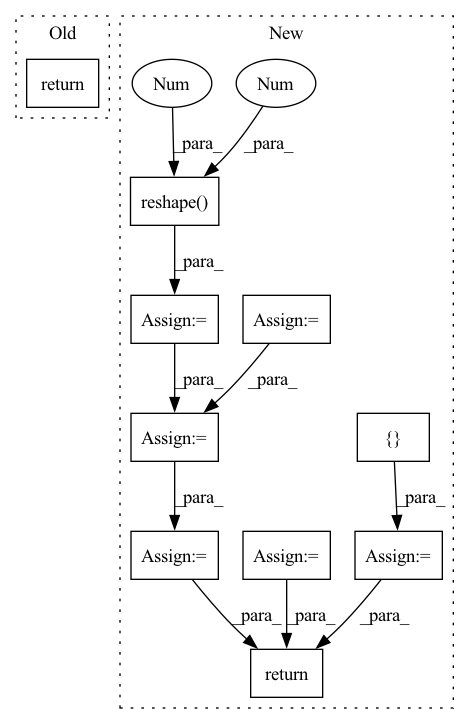

Pattern ID :27288

Before Change
return metric_dict
def collect(self, result_list, batch_size_list):
return self.evaluator.collect(result_list, batch_size_list)
def __str__(self):
return "The evaluator will evaluate test_data on {} at {}".format(", ".join(self.eval_metric), ", ".join(map(str, self.topk)))
After Change
"Hit@1": 0.16666666666666666, "MRR@1": 0.08333333333333333, "Recall@1": 0.08333333333333333 }
tmp_result_list = []
keys = list(result_list[0].keys())
for result in result_list:
tmp_result_list.append(list(result.values()))
result_matrix = np.array(tmp_result_list)
batch_size_matrix = np.array(batch_size_list).reshape(-1, 1)
assert result_matrix.shape[0] == batch_size_matrix.shape[0]
weighted_matrix = result_matrix * batch_size_matrix
metric_list = (np.sum(weighted_matrix, axis=0) / np.sum(batch_size_matrix)).tolist()
metric_dict = {}
for method, score in zip(keys, metric_list):
metric_dict[method] = score
return metric_dict
def _check_args(self):
In pattern: SUPERPATTERN
Frequency: 3
Non-data size: 10
Instances
Fragment ID: 81101269
Project Name: rucaibox/recbole
Commit Name: b1bf9c4f1c9e381eb635a52870f990c7d1ab4818
Time: 2020-07-07
Author: 1337990880@qq.com
File Name: evaluator/evaluator.py
M Class Name: Evaluator
N Class Name: Evaluator
M Method Name: collect(3)
N Method Name: collect(3)
M Parent Class: AbstractEvaluator
N Parent Class: BaseEvaluator
M File Name: evaluator/evaluator.py
N File Name: evaluator/evaluator.py
M Start Line: 394
M End Line: 394
N Start Line: 206
N End Line: 221
'>
Before Change
// reshape the grid so that it can be used as a kernel for F.conv1d
kernel_shape = [1] * len(tensor.shape)
kernel_shape[dim] = kernel_size_int
grid = grid.view(kernel_shape)
grid = grid.detach()
padding = [0] * (2 * len(tensor.shape))
padding[dim * 2 + 1] = math.ceil((kernel_size_int - 1) / 2)
padding[dim * 2] = math.ceil((kernel_size_int - 1) / 2)
padding = tuple(reversed(padding))
if padding_mode == "replicate":
// replication padding has some strange constraints...
assert len(tensor.shape) - dim <= 2
padding = padding[:(len(tensor.shape) - 2) * 2]
tensor_ = F.pad(tensor, padding, padding_mode, padding_value)
// create gaussian kernel from grid using current sigma
kernel = torch.exp(-0.5 * (grid / sigma) ** 2)
kernel = kernel / kernel.sum()
// convolve input with gaussian kernel
return F.conv1d(tensor_, kernel)
class GaussianFilterNd(nn.Module):
After Change
source_shape = tensor.shape
tensor = torch.movedim(tensor, dim, len(source_shape)-1)
dim_last_shape = tensor.shape
assert tensor.shape[-1] == source_shape[dim]
// we need reshape instead of view for batches like B x C x H x W
tensor = tensor.reshape(-1, 1, source_shape[dim])
padding = (math.ceil((kernel_size_int - 1) / 2), math.ceil((kernel_size_int - 1) / 2))
tensor_ = F.pad(tensor, padding, padding_mode, padding_value)
// create gaussian kernel from grid using current sigma
kernel = torch.exp(-0.5 * (grid / sigma) ** 2)
kernel = kernel / kernel.sum()
// convolve input with gaussian kernel
tensor_ = F.conv1d(tensor_, kernel)
tensor_ = tensor_.view(dim_last_shape)
tensor_ = torch.movedim(tensor_, len(source_shape)-1, dim)
assert tensor_.shape == source_shape
return tensor_
class GaussianFilterNd(nn.Module):
'>
Fragment ID: 81101396
Project Name: matthias-k/deepgaze
Commit Name: a2f6037f9ae20086ff19775583ed036167449172
Time: 2022-06-20
Author: matthias.kuemmerer@bethgelab.org
File Name: deepgaze_pytorch/layers.py
M Class Name: AnonimousClass
N Class Name: AnonimousClass
M Method Name: gaussian_filter_1d(7)
N Method Name: gaussian_filter_1d(7)
M Parent Class:
N Parent Class:
M File Name: deepgaze_pytorch/layers.py
N File Name: deepgaze_pytorch/layers.py
M Start Line: 130
M End Line: 160
N Start Line: 128
N End Line: 164
'>
Before Change
return metric_dict
def collect(self, result_list, batch_size_list):
return self.evaluator.collect(result_list, batch_size_list)
def __str__(self):
return "The evaluator will evaluate test_data on {} at {}".format(", ".join(self.eval_metric), ", ".join(map(str, self.topk)))
After Change
"Hit@1": 0.16666666666666666, "MRR@1": 0.08333333333333333, "Recall@1": 0.08333333333333333 }
tmp_result_list = []
keys = list(result_list[0].keys())
for result in result_list:
tmp_result_list.append(list(result.values()))
result_matrix = np.array(tmp_result_list)
batch_size_matrix = np.array(batch_size_list).reshape(-1, 1)
assert result_matrix.shape[0] == batch_size_matrix.shape[0]
weighted_matrix = result_matrix * batch_size_matrix
metric_list = (np.sum(weighted_matrix, axis=0) / np.sum(batch_size_matrix)).tolist()
metric_dict = {}
for method, score in zip(keys, metric_list):
metric_dict[method] = score
return metric_dict
def _check_args(self):
'>
Fragment ID: 81101264
Project Name: rucaibox/recbole
Commit Name: cf5c4dcdff6237cb0c5cedb35d12b7831cfdc46d
Time: 2020-07-07
Author: 893833413@qq.com
File Name: evaluator/evaluator.py
M Class Name: Evaluator
N Class Name: Evaluator
M Method Name: collect(3)
N Method Name: collect(3)
M Parent Class: AbstractEvaluator
N Parent Class: BaseEvaluator
M File Name: evaluator/evaluator.py
N File Name: evaluator/evaluator.py
M Start Line: 394
M End Line: 394
N Start Line: 206
N End Line: 221